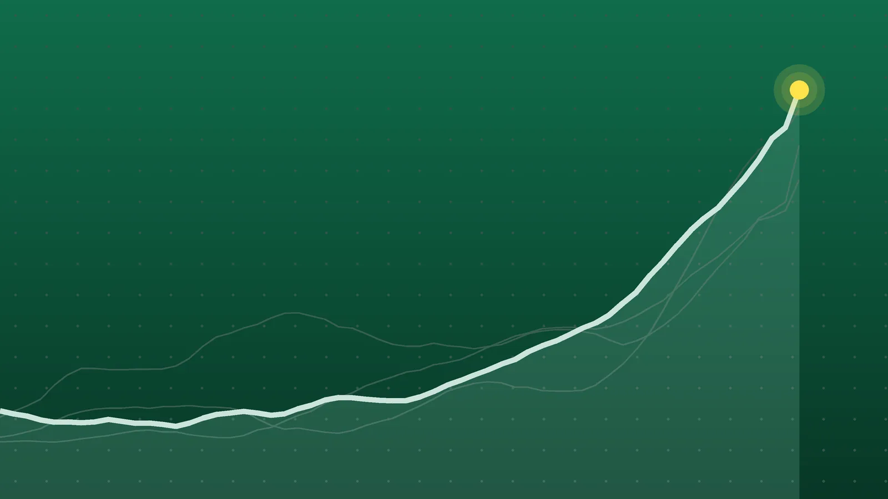

SportsExplainer
La Liga Scores, Oct. 25: Real Madrid Win Clásico 2-1 at Camp Nou
Mbappé’s late winner cut Barcelona’s lead to three points. Athletic ended a four-game winless run, and Real Sociedad stayed in the European places.

Quick take
- Real Madrid won 2-1 at Barcelona with Kylian Mbappé goals in the 41st and 87th minutes, ending Barcelona’s 9-0 start to the league season.
- Athletic Club beat Getafe 4-0 at San Mamés, with Berenguer scoring once and setting up two more; Getafe’s Mario Martín was sent off late.
- Real Sociedad came from behind to beat Levante 2-1 and moved to 19 points, fifth in the table.
- Barcelona lead with 27 points, ahead of Atlético Madrid on 25 and Real Madrid on 24, all after 10 games.
Why it's trending Four La Liga matches on Sunday, Oct. 25, finished Matchday 10’s weekend slate, headlined by El Clásico at Camp Nou.
La Liga scores for Oct. 25
Sunday belonged to Real Madrid. Kylian Mbappé scored twice at Camp Nou, the winner coming in the 87th minute, and Madrid beat Barcelona 2-1 to end the leaders’ perfect start, according to Sporza and VAVEL. We break that game down in our El Clásico explainer.
Earlier in the day, Athletic Club thrashed Getafe 4-0 in Bilbao, Real Sociedad beat Levante 2-1 in San Sebastián, and Celta Vigo and Real Betis drew 0-0. The four games produced 10 goals, and only one road team won.
All final scores
| Winner | Score | Loser | Note |
|---|---|---|---|
| Real Madrid | 2-1 | at Barcelona | Mbappé 41’ and 87’; Raphinha 61’ for Barcelona |
| Athletic Club | 4-0 | Getafe | Home win; Berenguer, Iñaki Williams, Aitor Paredes, Yuri Berchiche; Getafe’s Mario Martín sent off |
| Real Sociedad | 2-1 | Levante | Home win; Orri Óskarsson and Beñat Turrientes scored after Nacho Pérez put Levante ahead |
| Celta Vigo | 0-0 | Real Betis | Draw at Balaídos; Nelson Deossa hit the crossbar |
Madrid win at Camp Nou
Barcelona had more of the ball but struggled to break through. Mbappé’s opener just before halftime came when Gerard Martín’s attempted clearance struck him and went in. Raphinha leveled the match on the hour with a low finish from Pedri’s pass, before Camavinga set up Mbappé’s winner late on, per El Español.
Madrid goalkeeper Andriy Lunin, in for Thibaut Courtois, who had the flu, made a key save on a Gerard Martín header in the second half. Both sides lost a player to injury: Barcelona’s Xavi Espart in the first half and Madrid’s Federico Valverde early in the second.
Athletic end their slump
Athletic had gone four league rounds without a win, EFE reported. Berenguer opened the scoring in the 17th minute and then set up Iñaki Williams, whose goal in the 35th was his first of the season. Aitor Paredes headed in a Berenguer corner in the 70th, and Yuri Berchiche added a long-range fourth late on.
Getafe finished with 10 men after Mario Martín was shown a straight red card for a heavy challenge in the closing minutes. EFE noted that Getafe, who lost 5-2 to Lugano in Europe on Thursday, have yet to collect a point on the road this season. Athletic out-shot them 11-7 and had about 63% of the ball, La Nación’s match data showed.
Real Sociedad rally, Celta settle for a point
Real Sociedad scored first through Orri Óskarsson in the sixth minute, but Nacho Pérez equalized for Levante in the 22nd. Beñat Turrientes restored the lead five minutes later, and that was enough. The home side took 17 shots to Levante’s 6, according to La Nación.
In Vigo, Celta had managed fewer shots on target than any other La Liga team before Sunday, yet they made Betis goalkeeper Álvaro Valles work six times, EFE said. Deossa’s shot off the bar early in the second half was the closest either side came.
What it means
The top of the table after Matchday 10’s Sunday games, per Goal.com:
| Club | Played | Points |
|---|---|---|
| Barcelona | 10 | 27 |
| Atlético Madrid | 10 | 25 |
| Real Madrid | 10 | 24 |
| Real Betis | 10 | 20 |
| Real Sociedad | 10 | 19 |
| Sevilla | 9 | 14 |
Compared with LaLiga’s table before Sunday, Barcelona’s lead over Madrid has halved, from six points to three. Atlético are now the closest challenger, two points back. Betis moved up one point to 20 and Real Sociedad climbed from 16 to 19.
Further down, Athletic have 12 points from nine games, while Getafe stayed on 9 and Levante on 10, both from 10 games.
What’s next
Matchday 11 begins next weekend. Barcelona host Alavés on Saturday, Oct. 31, and Real Madrid visit Racing Santander on Sunday, Nov. 1, according to LaLiga’s fixture pages for Barcelona and Real Madrid. Both clubs then play Champions League games: Barcelona host Aston Villa on Nov. 3, and Madrid visit AEK Athens on Nov. 4.
Sources
- VAVEL USA Barcelona vs Real Madrid LIVE Updates, Mbappé scores again (1-2)Oct. 25, 2026
- Sporza Mbappé kroont Real tot winnaar van Clasico: Franse superster bezorgt Barcelona late dreunOct. 25, 2026
- El Español FC Barcelona 1-2 Real Madrid, fútbol hoy | Los de Mourinho se llevan El Clásico con un doblete de MbappéOct. 25, 2026
- EFE via Infobae 4-0. El Athletic coge aire y deja tocado al GetafeOct. 25, 2026
- La Nación Athletic Club venció 4-0 a Getafe, por la Liga de EspañaOct. 25, 2026
- EFE via Infobae 0-0. Celta y Betis empatan sin goles en BalaídosOct. 25, 2026
- La Nación Real Sociedad venció 2-1 a Levante, por la Liga de EspañaOct. 25, 2026
- Goal.com LaLiga Table 2026/2027Oct. 25, 2026
- LaLiga Standing of LALIGA EA SPORTS 2026/27Oct. 25, 2026
- LaLiga Calendar and Upcoming Matches of the FC BarcelonaOct. 25, 2026
- LaLiga Calendar and Upcoming Matches of the Real MadridOct. 25, 2026
Keep reading

El Clásico: Mbappé Double Ends Barcelona’s Perfect Start, 2-1
Real Madrid beat Barcelona 2-1 in El Clásico on Oct. 25. How Mbappé’s two goals ended Barça’s 9-0 start, what it means for the La Liga title race and what’s next.

La Liga Scores, Oct. 24: Álvarez Lifts Atlético Past Deportivo
La Liga scores for Oct. 24, 2026: Atlético beat Deportivo 1-0, Villarreal won 2-1 at Valencia, Racing beat Espanyol 2-1 and Elche won 3-0 at Rayo.

Champions League Scores, Oct. 21: Rice Rescues Arsenal at Bayern
Champions League scores for Oct. 21, 2026: all nine Matchday 3 results, from Bayern 2-2 Arsenal and Real Madrid 4-1 Leipzig to Como’s 4-1 rout of Man United.